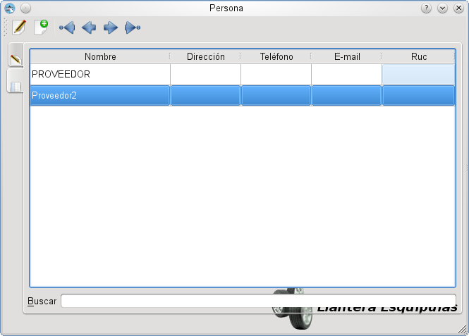
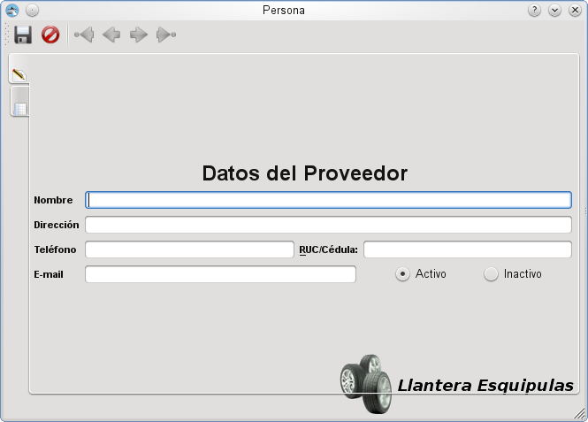

MIS Esquipulas: Inventario: Catalogo de Proveedores
MIS Esquipulas: Inventario: Catalogo de Proveedores
El catalogo de proveedores permite navegar entre todos los proveedores del sistema, estos son usados para las liquidaciones y las entradas locales.
 Catalogo de Proveedores
Añadir Proveedores
Para añadir proveedores al sistema se da click en el boton de
crear un nuevo proveedor (  )
)
Añadir proveedores